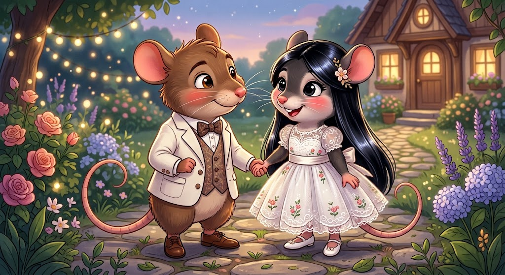

Para Andre
18 de septiembre de 2026
Feliz cumpleaños Andre
Hola, mi amor.
Espero de verdad que te sientas bien hoy. Quizás este no sea un día que esperabas con tantas ganas, o quizás te provoque emociones que no son precisamente las mejores, jeje. Pero está bien, amorcito. No tienes que sentirte feliz todo el tiempo solamente porque es tu cumpleaños. Yo estoy aquí para acompañarte, aunque sea desde lejos, y para intentar hacerte sentir especial en TU día.
Quiero que sepas que te amo. Te amo muchísimo. Y que para mí este sí es un día demasiado especial, porque es el día en que nació el amor de mi vida. El niño y hombre de mis ojos, la persona que amo con todo mi corazón.

Ojalá pudiera regalarte el mundo entero, mi amor. De verdad. Para que pudieras ver con tus propios ojos todo lo que mereces y todo lo bonito que quiero para ti. No quiero que sientas pena, ni tristeza, ni que te bajonees porque quizás algunas personas ignoraron este día o no te demostraron lo especial que eres.
Porque tú eres especial, Andre. Muchísimo más de lo que quizás tú mismo alcanzas a ver.
Perdón por no poder estar ahí contigo. Perdón por no poder cantarte feliz cumpleaños, abrazarte, molestarte en persona o hacer todas esas cosas que me gustaría hacer contigo. Pero algún día vamos a estar juntitos y voy a poder cantarte cumpleaños en tu camita, abrazarte y decirte en persona todo esto que ahora tengo que escribirte por una pantalla.

Y ya, amor… es un día demasiado lindo como para dejar que unas malas experiencias lo arruinen. Quiero que intentes disfrutarlo, aunque sea un poquito. Quiero que tengas la mejor disposición, porque siempre puede ser un buen día para cambiar las cosas, y eso es lo que quiero intentar hacer por ti.
Quiero hacerte ver que este día es tan especial como el nacimiento de la Princesa Diana. JAJAJAJA. No sé por qué se me ocurrió ese ejemplo, pero déjame ser dramática por un momento.
Te amo, corazón. Feliz cumpleaños.
Y perdón por lo poco. Perdón por esto que quizás sientas que no es nada, por no poder darte algo enorme, por tener que darte solamente palabras. Pero es lo que tengo ahora mismo en mis manos y estoy haciendo lo mejor que puedo con ellas.

Aunque bueno… también te hice esto JAJAJA. Con toda la programación que sé, que no es precisamente mucha. Y con la ayuda de mi ChatGPT, que sabe demasiado de nosotros, obvio JAJAJA.
Pero aunque haya un poquito de código, un poquito de ChatGPT y probablemente muchas horas de pensar qué mierda hacer, todo esto lo hice yo pensando en ti y con todo el amor del mundo.
Te amo mucho, we. Muchísimo.
Y ojalá pueda hacerte cambiar un poquito esa visión que tienes de tu cumpleaños. Porque para mí, amor, este día sí es demasiado especial.
Porque naciste tú.
Y para mí, tú eres de las cosas más especiales que tengo en mi vida.
Feliz cumpleaños, mi amor.
Te amo. Siempre.
Aparte de ser tu cumpleaños, es nuestro mes aniversario: ¡16 meses ya, mi amorcito precioso! No te imaginas lo feliz que estoy de un mes más, de estar siempre contigo, de que seas el hombre de mi vida. Te amo como no te imaginas y no tengo palabras para expresar lo hermoso que es esto.
Te amo. Perdón por las actitudes, las peleas, los cambios de humor que a veces tengo. De verdad, perdóname por todo, mi amor. Te juro que estoy tratando de mejorar para darte la mejor versión de mí.
Perdón si estos días he estado un poco floja, duermo de más o quizás no contesto tanto. Me he sentido bastante cansadita, no sé qué me pasa, pero estoy feliz y agradecida de poder tenerte aún. Perdóname, mi amor.
Y también quiero agradecerte por algo más: gracias por la suegra que me diste. De verdad la amo muchísimo y estoy demasiado agradecida de haber podido conocerla y tener ese cariño con ella. Y a mi suegro también lo quiero muchísimo. Gracias por darme una familia tan bonita y por hacerme sentir parte de ella, incluso estando tan lejos. Los quiero muchísimo a los dos y espero poder compartir muchos momentos más con ellos.
Aparte de eso, también te hice tu regalito de cumpleaños y eso que me costó un montón encontrarle un orden JAJAJA. Pero ya aprendí a programar solo para darte un regalo de cumpleaños virtual, JJAJAJA.
TE AMO, AMORCITO MÍO. FELIZ MES. Eres mi vida entera, el hombre con el que me quiero casar, eres mi todo, mi TODOOOO. Te amo demasiado. Ojalá poder darte el mundo, mi amor, pero no te preocupes, algún día estaremos mirando la playa por nuestras vacaciones y nuestros babys, que serán hermosos, y valdrá cada centavo, cada segundo a tu lado. Es mi todo, corazón.
Te extraño demasiado. Perdón por estar tan lejos, perdóname. Te amo mucho, corazón.
Aquí atentamente tu mujer, que te ama hoy, siempre y está vuelta loca por ti, hombrecito. Te amo y estoy locamente enamorada de ti.
Loca, loca, estoy por ti.
Había una vez un pequeño ratoncito llamado André que vivía junto a sus papás en una pequeña y acogedora cuevita, escondida entre las paredes de una enorme casa.
A André le encantaba salir a recorrerla cuando los humanos regresaban de hacer sus compras. Se escondía entre los rincones y observaba todo con enorme curiosidad: los zapatos, los bolsos, los vestidos y, sobre todo, las prendas de lujo que veía desfilar frente a sus pequeños ojos.
Conocía casi todas las marcas.
Y aunque sabía que aquellas cosas pertenecían a un mundo demasiado grande para un pequeño ratón, siempre pensaba:
—Algún día yo también tendré algo así.
Una tarde, mientras caminaba por uno de los pasillos, encontró un pequeño trozo de tela que había caído de alguna prenda humana.
André lo recogió entre sus patitas y tuvo una idea.
Con mucho esfuerzo, comenzó a convertir aquel pedacito de tela en una pequeña chaqueta. No era perfecta, pero para él era maravillosa.
Cuando finalmente terminó, se la puso frente a un pequeño espejo.
André sonrió.
Por primera vez se sintió como uno de aquellos elegantes humanos que tanto admiraba.
Y estaba feliz.
Pero aquella felicidad no duró mucho tiempo, porque ese mismo día vio algo que cambiaría su pequeño mundo.
Al otro lado de la habitación había una hermosa ratoncita.
Su pelaje era negro, brillante y perfectamente cuidado. Además, desprendía un delicado aroma a jabón que hacía que André quisiera quedarse cerca de ella para siempre.
La ratoncita observaba fascinada un hermoso vestido brillante que llevaba puesto una humana frente al espejo.
André quedó completamente encantado.
Sin saber cómo acercarse, corrió hasta un pequeño mosquito que conocía la habitación.
—¿Quién es ella? —preguntó.
El mosquito se rió.
—Ella es la ratoncita Vanidosa.
Desde aquel instante, André quedó enamorado.
No sabía su historia. No conocía sus gustos. Ni siquiera sabía cómo era realmente.
Solo sabía que, desde que la había visto, algo dentro de él había cambiado.

Así que decidió conquistarla.
Durante varios días buscó la manera de conseguir algo especial para ella. Hasta que, en una de sus aventuras, encontró una pequeña moneda que los humanos habían dejado caer.
André la arrastró con todas sus fuerzas hasta donde vivía un viejo pájaro carpintero que fabricaba pequeños objetos con todo tipo de materiales.
—Quiero un anillo, un collar y unos pendientes —le pidió—. Quiero que brillen como sus ojos.
El pájaro carpintero trabajó durante horas y finalmente creó unas pequeñas joyas que parecían guardar la luz de la luna.
Pero André todavía no estaba satisfecho.
Recordó el hermoso vestido brillante que la ratoncita había estado mirando.
Esperó hasta que nadie estuviera cerca, corrió hasta la habitación de la humana y, con mucho cuidado, arrancó un pequeño pedazo de aquella tela.
Después fue donde una vieja araña costurera.
—¿Podrías hacer un vestido para alguien muy especial?
La araña aceptó.
Y André esperó toda la tarde.
Cuando finalmente cayó la noche, la luna apareció en el cielo en todo su esplendor y los grillos comenzaron a tocar su hermosa canción.
André tomó sus regalos y caminó hasta el rincón donde vivía la ratoncita.
Ella lo vio acercarse.
Primero observó sus pequeñas patas.
Después su chaqueta brillante.
Y finalmente su rostro.
—¿Qué haces aquí, ratoncito? —preguntó—. Estás muy lejos de casa. ¿Por qué viniste hasta aquí? En este rincón no hay comida y durante la noche solo nos acompaña la luna.
André respiró profundamente.
—Solo vine a ver una estrella.
La ratoncita levantó una ceja.
—¿Una estrella?
—Sí —respondió él—. Una estrella que aparece justo aquí.
Ella, confundida, aceptó que se sentara a su lado.
Los dos miraron la luna.
Pasaron los minutos.
Después, las horas.
Pero aquella supuesta estrella nunca apareció.
La ratoncita comenzó a bostezar.
—Bueno, ratoncito. Creo que iré a dormir. Mañana será un lindo día, eso me dijeron los pájaros.
André sintió que su única oportunidad se escapaba.
—¡Espera! ¡Espera!
La ratoncita se dio vuelta.
André sacó los regalos.
—Tengo esto para ti.
Le entregó el vestido y las pequeñas joyas.
—Tú eras la estrella que quería ver —dijo tímidamente—. Tus ojos brillan más que cualquier joya y tu pelo brilla con la luz del sol. Desde que te vi, me pareciste la criatura más hermosa que había conocido.
La ratoncita se sonrojó.
Aceptó los regalos y, curiosa, se puso el vestido. Después colocó las joyas y se miró frente al espejo.
Por un momento quedó maravillada.
Era exactamente como había imaginado verse.
Se dio vuelta hacia André y sonrió.
Pero luego su expresión cambió.
—¿Cómo sabías que me gustaría esto?
André respondió con toda sinceridad:
—Porque desde que te vi me enamoré de ti.
Ella soltó una pequeña risa.
—¿Pero cómo puedes estar enamorado de mí si ni siquiera me conoces?
André se quedó en silencio.
—No sabes cómo soy. No conoces mis defectos, mis miedos, mis sueños... Solo sabes cómo me veo.
La pequeña ratoncita se quitó lentamente las joyas y después el vestido.
Se los devolvió.
—Quizás mañana descubras que no te gusta cómo soy.
André bajó la mirada.
—Pero desde que te vi pude ver colores mágicos en ti.
Ella negó suavemente con la cabeza.
—¿Y tú crees que cuando yo te miro veo esos mismos colores?
André no respondió.
—Para mí —continuó ella— eres solo un ratoncito que quiere conquistarme con cosas bonitas.
La ratoncita dejó los regalos sobre el suelo.
—Si para ti conquistarme significa llenarme de lujos, estás equivocado. Yo busco algo mucho más preciado. Algo que todavía no he encontrado.
Y antes de marcharse, agregó:
—Buena suerte, ratoncito al que le gustan las cosas bonitas.
André quedó destrozado.
A la mañana siguiente decidió descubrir qué era aquello que ella buscaba.
—Si le dicen Vanidosa porque le gusta verse bien... entonces debe amar los lujos —pensaba—. Y yo solo soy un pequeño ratón.
Mientras caminaba cabizbajo, una hormiga que pasaba cerca escuchó sus pensamientos.
—La ratoncita no es vanidosa —dijo.
André levantó la cabeza.
—¿No?
—No. Le dicen así porque siempre está arreglada y se preocupa por verse bonita. Pero yo nunca la he visto presumir de sus cosas. De hecho, la he visto hacer algo completamente distinto.
—¿Qué cosa?
La hormiga sonrió.
—La he visto saltar desde lugares muy altos solamente para sentir la adrenalina.
André abrió los ojos.
—¿Adrenalina?
—Quizás eso sea lo que está buscando.
La hormiga continuó su camino.
Y André comenzó a pensar.
Aquella tarde se le ocurrió una idea.
Fue hasta la casa de la ratoncita y llamó a su puerta.
Cuando ella salió, André sonrió.
—Tengo una invitación para ti.
—¿Para qué?
—Para el festival de juegos.
Los ojos de la ratoncita cambiaron inmediatamente.
—Nos vemos allá.
André salió corriendo y dando pequeños saltos de felicidad.
Esa noche se puso su mejor vestimenta y llegó al festival.
Y entonces la vio.
La ratoncita llevaba un elegante vestido de seda blanca. Su hermoso pelaje negro brillaba bajo las luces del festival.
Pero esta vez André no se quedó mirando su vestido.
Se quedó mirando su sonrisa.
Subieron al primer juego.
Después al segundo.
Luego al tercero.
Y después perdieron la cuenta.
La ratoncita reía, gritaba, saltaba y disfrutaba cada segundo.
André finalmente comprendió.
No le gustaba solamente verse bonita.
Le gustaba sentirse viva.
Cuando la noche estaba llegando a su fin, André se sentó junto a ella.
—Ahora entiendo —dijo.
La ratoncita lo miró.
—¿Entiendes qué?
—Por qué te dicen Vanidosa.
Ella sonrió.
—¿Y qué crees?
André negó con la cabeza.
—Creo que la gente solo ve cómo te ves. Te ven arreglada, bonita y preocupada por lucir bien. Pero no ven lo que hay detrás.
La ratoncita bajó la mirada.
—Yo solo quiero sentirme viva —confesó—. Quiero sentir adrenalina. Quiero reír, viajar, conocer lugares, hacer cosas que me hagan olvidar por un momento que el mundo puede ser tan aburrido.
Miró a André.
—Y tú... eres el único ratoncito que me ha hecho sentir así.
André se quedó completamente rojo.
La ratoncita se acercó y le dio un pequeño beso.
André, todavía avergonzado, le devolvió el beso.
Después tomó su pequeña patita entre las suyas.
—Entonces viajaremos por el mundo.
Ella sonrió.
—¿Nosotros?
—Nosotros.
—¿Y qué haremos?
André miró las estrellas.
—Viviremos nuestras propias aventuras. Conoceremos lugares que nunca hemos visto, nos meteremos en problemas, reiremos hasta que nos duela la pancita y, sobre todo, haré todo lo posible para que nunca olvides lo que se siente estar viva.
La ratoncita apoyó su cabeza sobre él.
Y desde aquella noche comenzó una nueva historia.
André dejó de intentar conquistarla con cosas bonitas.
Porque finalmente había entendido que el regalo más valioso no era un vestido, una joya ni una prenda de lujo.
Era compartir la vida con alguien que te hiciera sentir que cada día podía convertirse en una nueva aventura.
Y así, el pequeño ratoncito André comenzó su viaje junto a su querida ratoncita Vanidosa.
Dos pequeños ratones.
Un mundo enorme.
Y un cuento que apenas estaba comenzando.